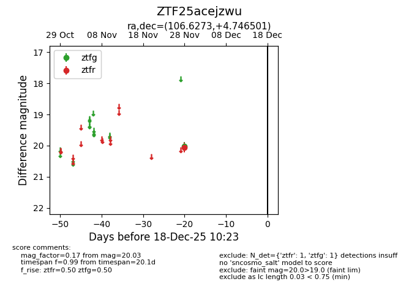
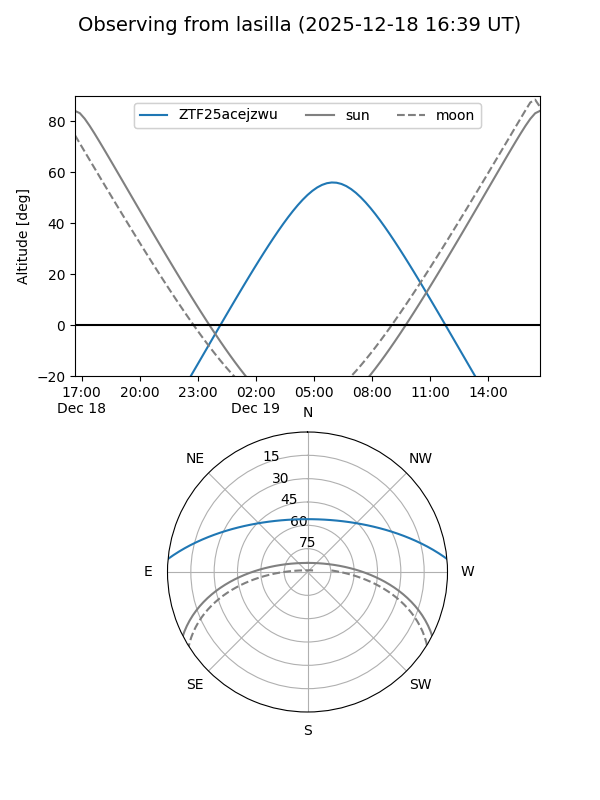
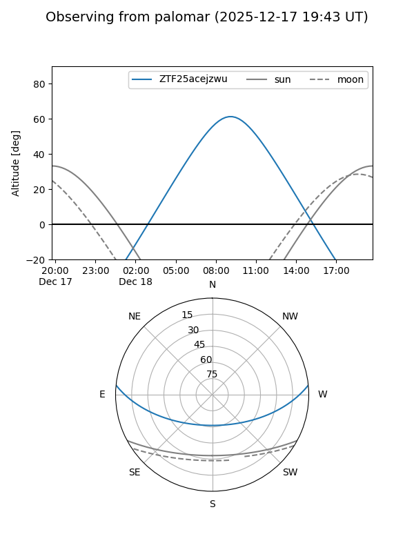

ZTF25acejzwu
Target ZTF25acejzwu at 2025-12-18 11:17
Aliases and brokers:
FINK: fink-portal.org/ZTF25acejzwu
Lasair: lasair-ztf.lsst.ac.uk/objects/ZTF25acejzwu
ALeRCE: alerce.online/object/ZTF25acejzwu
alt names
ZTF25acejzwu (ztf,fink_ztf)
Coordinates:
equatorial (ra, dec) = 106.6273,+4.74650
equatorial (HMS+DMS) = 07:06:30.54,+04:44:47.41
galactic (l, b) = (210.4109,+5.50972)
Photometry
last ztfg=20.03, ztfr=20.06
1 ztfg, 1 ztfr detections
Lightcurve

Visibility


Additional plots